Effect comparison without sibling comparison
Loading details
library(data.table); library(ggplot2); library(knitr); library(MCMCglmm); library(formr);
opts_chunk$set(cache=T,cache.lazy=F,tidy=FALSE,autodep=TRUE,dev=c('png','pdf'),fig.width=20,fig.height=12.5,out.width='1440px',out.height='900px')
source("0__helpers.R")
load("krmh.rdata"); load('rpqa.rdata'); load('ddb.rdata'); load('swed1.rdata')
rm(krmh, rpqa, ddb, swed.2)
Analysis description
Model description
All of the following models have the following in common:
Multivariate normal prior
Using the R package pscl and its function zeroinfl, we fit a zero-inflated Poisson model to the data and then use this to predict the number of children at different paternal ages.
Main predictor
The main predictor, paternal age, has been binned into meaningful bins. This way, we let the data speak and can see whether the shape of the relationship is consistent with a linear effect. To this end we plot a linear regression through the best estimates for each factor (inversely weighted by confidence interval width, i.e. certainty). Even if a nonlinear fit might be slightly better, our theory clearly predicts a linear fit, so we are satisfied it the data is consistent with a linear effect.
Covariates
We control for nothing.
Krummhörn
library(pscl)
krmh.1 = krmh.1[byear< 1835, ]
krmh.1$paternalage.factor = human_readable_factor(as.character(krmh.1$paternalage.factor))
krmh.1[, nr.siblings := center(nr.siblings)]
krmh.1[, dependent_sibs_f5y := center(dependent_sibs_f5y)]
summary(krmh_Children.surviving5y <- zeroinfl(children.surviving5y ~ dependent_sibs_f5y + maternalage.factor + paternalloss + maternalloss + nr.siblings + birth.cohort + male + paternalage.factor, data = krmh.1))
##
## Call:
## zeroinfl(formula = children.surviving5y ~ dependent_sibs_f5y + maternalage.factor +
## paternalloss + maternalloss + nr.siblings + birth.cohort + male +
## paternalage.factor, data = krmh.1)
##
## Pearson residuals:
## Min 1Q Median 3Q Max
## -0.819 -0.607 -0.526 0.228 7.417
##
## Count model coefficients (poisson with log link):
## Estimate Std. Error z value Pr(>|z|)
## (Intercept) 1.31814 0.04644 28.38 <2e-16 ***
## dependent_sibs_f5y -0.01633 0.01209 -1.35 0.1765
## maternalage.factor(14,20] -0.05470 0.10745 -0.51 0.6107
## maternalage.factor(35,50] 0.01020 0.02923 0.35 0.7271
## paternalloss 0.01516 0.04734 0.32 0.7488
## maternalloss -0.02333 0.04824 -0.48 0.6287
## nr.siblings 0.00807 0.00539 1.50 0.1341
## birth.cohort(1773,1796] 0.01727 0.03109 0.56 0.5785
## birth.cohort(1796,1814] -0.09634 0.03075 -3.13 0.0017 **
## birth.cohort(1814,1830] -0.49051 0.03472 -14.13 <2e-16 ***
## birth.cohort(1830,1850] -0.39246 0.06804 -5.77 8e-09 ***
## male 0.04949 0.02121 2.33 0.0196 *
## paternalage.factor25-30 0.01366 0.04576 0.30 0.7654
## paternalage.factor30-35 0.03578 0.04555 0.79 0.4321
## paternalage.factor35-40 -0.02934 0.04864 -0.60 0.5463
## paternalage.factor40-45 -0.02945 0.05321 -0.55 0.5800
## paternalage.factor45-50 0.01389 0.06260 0.22 0.8244
## paternalage.factor50-55 -0.03070 0.08088 -0.38 0.7042
## paternalage.factor55-90 -0.20437 0.13896 -1.47 0.1414
##
## Zero-inflation model coefficients (binomial with logit link):
## Estimate Std. Error z value Pr(>|z|)
## (Intercept) 0.6388 0.1036 6.17 0.0000000007 ***
## dependent_sibs_f5y 0.0848 0.0254 3.33 0.00086 ***
## maternalage.factor(14,20] 0.1000 0.2304 0.43 0.66428
## maternalage.factor(35,50] 0.1581 0.0621 2.55 0.01087 *
## paternalloss 0.3070 0.0993 3.09 0.00199 **
## maternalloss 0.5662 0.0989 5.73 0.0000000103 ***
## nr.siblings 0.0248 0.0112 2.21 0.02712 *
## birth.cohort(1773,1796] -0.2715 0.0730 -3.72 0.00020 ***
## birth.cohort(1796,1814] -0.3307 0.0706 -4.69 0.0000027724 ***
## birth.cohort(1814,1830] -0.1465 0.0712 -2.06 0.03978 *
## birth.cohort(1830,1850] 0.6142 0.1213 5.06 0.0000004161 ***
## male 0.2315 0.0461 5.02 0.0000005195 ***
## paternalage.factor25-30 -0.0894 0.1008 -0.89 0.37499
## paternalage.factor30-35 -0.0235 0.1001 -0.23 0.81433
## paternalage.factor35-40 0.0241 0.1049 0.23 0.81844
## paternalage.factor40-45 0.0616 0.1149 0.54 0.59174
## paternalage.factor45-50 0.1041 0.1346 0.77 0.43926
## paternalage.factor50-55 -0.0172 0.1749 -0.10 0.92151
## paternalage.factor55-90 0.2594 0.2586 1.00 0.31569
## ---
## Signif. codes: 0 '***' 0.001 '**' 0.01 '*' 0.05 '.' 0.1 ' ' 1
##
## Number of iterations in BFGS optimization: 47
## Log-likelihood: -1.18e+04 on 38 Df
krmh_Children_all_zi = plot_factor_response(krmh_Children.surviving5y)
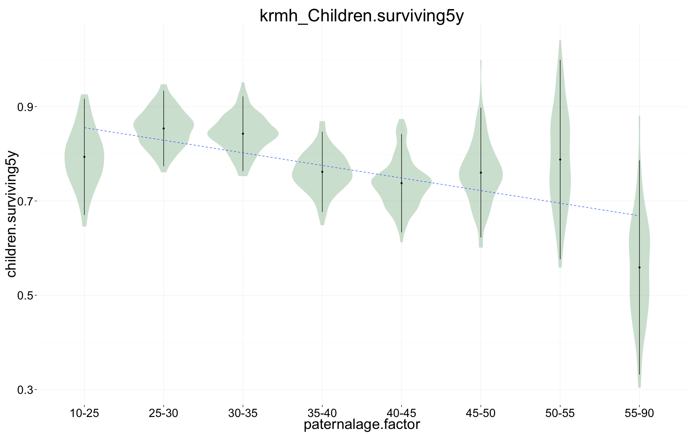
Maternal age in smaller bins
krmh.1[, maternalage.factor := cut((10*maternalage), breaks = c(10, 20,25,30, 35, 40,50))]
summary(krmh_Children.surviving5y_cont <- zeroinfl(children.surviving5y ~ dependent_sibs_f5y + maternalage.factor + paternalloss + maternalloss + nr.siblings + birth.cohort + male + paternalage.factor, data = krmh.1))
##
## Call:
## zeroinfl(formula = children.surviving5y ~ dependent_sibs_f5y + maternalage.factor +
## paternalloss + maternalloss + nr.siblings + birth.cohort + male +
## paternalage.factor, data = krmh.1)
##
## Pearson residuals:
## Min 1Q Median 3Q Max
## -0.833 -0.606 -0.525 0.231 7.250
##
## Count model coefficients (poisson with log link):
## Estimate Std. Error z value Pr(>|z|)
## (Intercept) 1.26553 0.11569 10.94 < 2e-16 ***
## dependent_sibs_f5y -0.00656 0.01266 -0.52 0.6044
## maternalage.factor(20,25] 0.07033 0.10946 0.64 0.5205
## maternalage.factor(25,30] 0.04036 0.10849 0.37 0.7099
## maternalage.factor(30,35] 0.04130 0.10957 0.38 0.7062
## maternalage.factor(35,40] 0.02089 0.11148 0.19 0.8514
## maternalage.factor(40,50] 0.17226 0.11618 1.48 0.1381
## paternalloss 0.01952 0.04734 0.41 0.6800
## maternalloss -0.02833 0.04829 -0.59 0.5575
## nr.siblings 0.00463 0.00554 0.84 0.4036
## birth.cohort(1773,1796] 0.01836 0.03112 0.59 0.5553
## birth.cohort(1796,1814] -0.09422 0.03079 -3.06 0.0022 **
## birth.cohort(1814,1830] -0.49126 0.03475 -14.14 < 2e-16 ***
## birth.cohort(1830,1850] -0.39291 0.06827 -5.76 0.0000000087 ***
## male 0.05176 0.02123 2.44 0.0148 *
## paternalage.factor25-30 0.01485 0.04600 0.32 0.7468
## paternalage.factor30-35 0.04126 0.04651 0.89 0.3750
## paternalage.factor35-40 -0.02197 0.05025 -0.44 0.6620
## paternalage.factor40-45 -0.03320 0.05514 -0.60 0.5471
## paternalage.factor45-50 0.00500 0.06458 0.08 0.9383
## paternalage.factor50-55 -0.04979 0.08290 -0.60 0.5481
## paternalage.factor55-90 -0.22281 0.13995 -1.59 0.1114
##
## Zero-inflation model coefficients (binomial with logit link):
## Estimate Std. Error z value Pr(>|z|)
## (Intercept) 0.7407 0.2417 3.06 0.00218 **
## dependent_sibs_f5y 0.0936 0.0263 3.56 0.00037 ***
## maternalage.factor(20,25] -0.0571 0.2347 -0.24 0.80780
## maternalage.factor(25,30] -0.1586 0.2329 -0.68 0.49586
## maternalage.factor(30,35] -0.0759 0.2351 -0.32 0.74691
## maternalage.factor(35,40] 0.0278 0.2387 0.12 0.90739
## maternalage.factor(40,50] 0.1505 0.2498 0.60 0.54680
## paternalloss 0.3094 0.0994 3.11 0.00185 **
## maternalloss 0.5644 0.0990 5.70 0.000000012 ***
## nr.siblings 0.0220 0.0114 1.93 0.05419 .
## birth.cohort(1773,1796] -0.2718 0.0731 -3.72 0.00020 ***
## birth.cohort(1796,1814] -0.3329 0.0706 -4.71 0.000002458 ***
## birth.cohort(1814,1830] -0.1486 0.0713 -2.08 0.03728 *
## birth.cohort(1830,1850] 0.6109 0.1217 5.02 0.000000514 ***
## male 0.2335 0.0462 5.06 0.000000422 ***
## paternalage.factor25-30 -0.0827 0.1014 -0.82 0.41506
## paternalage.factor30-35 -0.0174 0.1027 -0.17 0.86582
## paternalage.factor35-40 0.0264 0.1090 0.24 0.80885
## paternalage.factor40-45 0.0531 0.1194 0.44 0.65646
## paternalage.factor45-50 0.0920 0.1390 0.66 0.50791
## paternalage.factor50-55 -0.0398 0.1794 -0.22 0.82433
## paternalage.factor55-90 0.2380 0.2614 0.91 0.36260
## ---
## Signif. codes: 0 '***' 0.001 '**' 0.01 '*' 0.05 '.' 0.1 ' ' 1
##
## Number of iterations in BFGS optimization: 53
## Log-likelihood: -1.17e+04 on 44 Df
plot_factor_response(krmh_Children.surviving5y_cont, "maternalage.factor", bootstrap_replicates = 1)
## Warning: Removed 1 rows containing missing values (geom_segment).
## Warning: Removed 1 rows containing missing values (geom_segment).
## Warning: Removed 1 rows containing missing values (geom_segment).
## Warning: Removed 1 rows containing missing values (geom_segment).
## Warning: Removed 1 rows containing missing values (geom_segment).
## Warning: Removed 1 rows containing missing values (geom_segment).
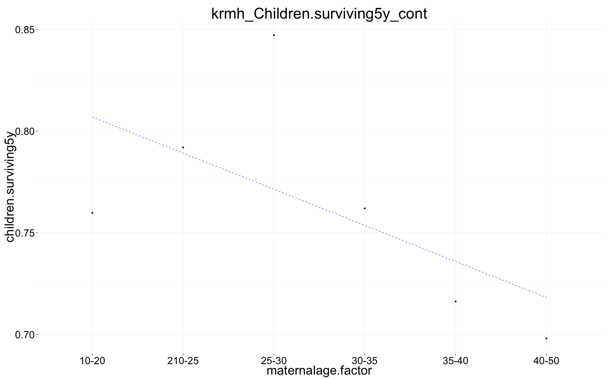
plot_factor_response(krmh_Children.surviving5y_cont, "paternalage.factor", bootstrap_replicates = 1)
## Warning: Removed 1 rows containing missing values (geom_segment).
## Warning: Removed 1 rows containing missing values (geom_segment).
## Warning: Removed 1 rows containing missing values (geom_segment).
## Warning: Removed 1 rows containing missing values (geom_segment).
## Warning: Removed 1 rows containing missing values (geom_segment).
## Warning: Removed 1 rows containing missing values (geom_segment).
## Warning: Removed 1 rows containing missing values (geom_segment).
## Warning: Removed 1 rows containing missing values (geom_segment).
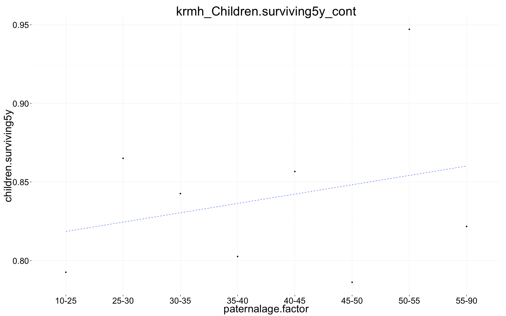
Québec
rpqa.1 = rpqa.1[byear<= 1740, ]
rpqa.1$paternalage.factor = human_readable_factor(as.character(rpqa.1$paternalage.factor))
rpqa.1[, nr.siblings := center(nr.siblings)]
rpqa.1[, dependent_sibs_f5y := center(dependent_sibs_f5y)]
summary(rpqa_Children.surviving5y <- zeroinfl(children.surviving5y ~ dependent_sibs_f5y + urban + maternalage.factor + paternalloss + maternalloss + nr.siblings + birth.cohort + male + paternalage.factor, data = rpqa.1))
##
## Call:
## zeroinfl(formula = children.surviving5y ~ dependent_sibs_f5y + urban +
## maternalage.factor + paternalloss + maternalloss + nr.siblings +
## birth.cohort + male + paternalage.factor, data = rpqa.1)
##
## Pearson residuals:
## Min 1Q Median 3Q Max
## -1.204 -0.869 -0.579 0.809 6.796
##
## Count model coefficients (poisson with log link):
## Estimate Std. Error z value Pr(>|z|)
## (Intercept) 1.952669 0.010675 182.93 < 2e-16 ***
## dependent_sibs_f5y 0.005938 0.002062 2.88 0.00398 **
## urban -0.199981 0.006676 -29.96 < 2e-16 ***
## maternalage.factor(14,20] 0.006997 0.009775 0.72 0.47408
## maternalage.factor(35,50] 0.003429 0.006829 0.50 0.61560
## paternalloss -0.029920 0.011009 -2.72 0.00657 **
## maternalloss -0.030514 0.011649 -2.62 0.00881 **
## nr.siblings 0.001244 0.000787 1.58 0.11388
## birth.cohort(1706,1723] -0.146585 0.006181 -23.72 < 2e-16 ***
## birth.cohort(1723,1734] -0.155688 0.006419 -24.25 < 2e-16 ***
## birth.cohort(1734,1743] -0.152089 0.007075 -21.50 < 2e-16 ***
## male 0.092801 0.004646 19.98 < 2e-16 ***
## paternalage.factor25-30 -0.023743 0.010560 -2.25 0.02455 *
## paternalage.factor30-35 -0.047557 0.010656 -4.46 0.00000809 ***
## paternalage.factor35-40 -0.055999 0.010971 -5.10 0.00000033 ***
## paternalage.factor40-45 -0.064034 0.011662 -5.49 0.00000004 ***
## paternalage.factor45-50 -0.045638 0.012816 -3.56 0.00037 ***
## paternalage.factor50-55 -0.068014 0.015243 -4.46 0.00000813 ***
## paternalage.factor55-90 -0.083960 0.017287 -4.86 0.00000119 ***
##
## Zero-inflation model coefficients (binomial with logit link):
## Estimate Std. Error z value Pr(>|z|)
## (Intercept) -0.63751 0.03970 -16.06 < 2e-16 ***
## dependent_sibs_f5y -0.01347 0.00709 -1.90 0.0576 .
## urban 0.76266 0.02014 37.88 < 2e-16 ***
## maternalage.factor(14,20] 0.02915 0.03598 0.81 0.4178
## maternalage.factor(35,50] 0.07256 0.02368 3.06 0.0022 **
## paternalloss 0.18574 0.03703 5.02 0.000000527 ***
## maternalloss 0.49816 0.03678 13.54 < 2e-16 ***
## nr.siblings 0.01603 0.00270 5.93 0.000000003 ***
## birth.cohort(1706,1723] 0.11928 0.02283 5.22 0.000000174 ***
## birth.cohort(1723,1734] 0.37827 0.02301 16.44 < 2e-16 ***
## birth.cohort(1734,1743] 0.28493 0.02552 11.16 < 2e-16 ***
## male 0.30792 0.01655 18.60 < 2e-16 ***
## paternalage.factor25-30 -0.01750 0.03881 -0.45 0.6520
## paternalage.factor30-35 0.03995 0.03884 1.03 0.3037
## paternalage.factor35-40 0.06235 0.03985 1.56 0.1177
## paternalage.factor40-45 0.08010 0.04212 1.90 0.0572 .
## paternalage.factor45-50 0.05470 0.04621 1.18 0.2365
## paternalage.factor50-55 0.10109 0.05395 1.87 0.0610 .
## paternalage.factor55-90 0.02482 0.06084 0.41 0.6833
## ---
## Signif. codes: 0 '***' 0.001 '**' 0.01 '*' 0.05 '.' 0.1 ' ' 1
##
## Number of iterations in BFGS optimization: 45
## Log-likelihood: -1.22e+05 on 38 Df
rpqa_Children_all_zi = plot_factor_response(rpqa_Children.surviving5y)
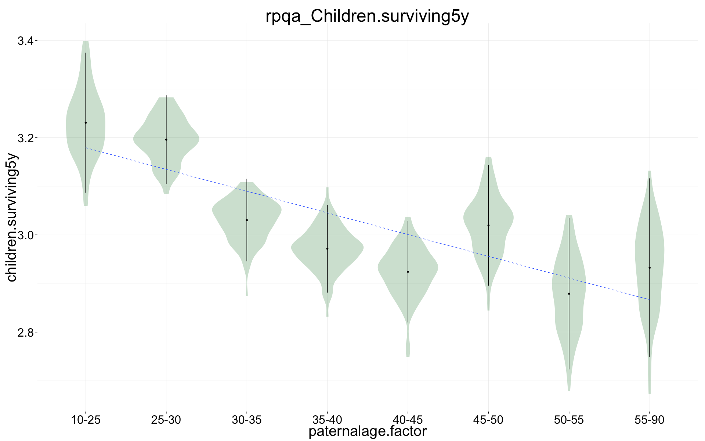
Maternal age in smaller bins
rpqa.1[, maternalage.factor := cut((10*maternalage), breaks = c(10, 20,25,30, 35, 40,50))]
summary(rpqa_Children.surviving5y_cont <- zeroinfl(children.surviving5y ~ urban + dependent_sibs_f5y + maternalage.factor + paternalloss + maternalloss + nr.siblings + birth.cohort + male + paternalage.factor, data = rpqa.1))
##
## Call:
## zeroinfl(formula = children.surviving5y ~ urban + dependent_sibs_f5y +
## maternalage.factor + paternalloss + maternalloss + nr.siblings +
## birth.cohort + male + paternalage.factor, data = rpqa.1)
##
## Pearson residuals:
## Min 1Q Median 3Q Max
## -1.212 -0.869 -0.579 0.809 6.807
##
## Count model coefficients (poisson with log link):
## Estimate Std. Error z value Pr(>|z|)
## (Intercept) 1.962149 0.012411 158.10 < 2e-16 ***
## urban -0.199887 0.006678 -29.93 < 2e-16 ***
## dependent_sibs_f5y 0.006669 0.002129 3.13 0.00174 **
## maternalage.factor(20,25] -0.011066 0.010185 -1.09 0.27726
## maternalage.factor(25,30] -0.003330 0.010669 -0.31 0.75495
## maternalage.factor(30,35] -0.006625 0.011373 -0.58 0.56024
## maternalage.factor(35,40] -0.010994 0.012270 -0.90 0.37023
## maternalage.factor(40,50] 0.019502 0.014259 1.37 0.17140
## paternalloss -0.029547 0.011011 -2.68 0.00729 **
## maternalloss -0.030137 0.011651 -2.59 0.00969 **
## nr.siblings 0.001151 0.000796 1.45 0.14832
## birth.cohort(1706,1723] -0.147197 0.006203 -23.73 < 2e-16 ***
## birth.cohort(1723,1734] -0.156517 0.006472 -24.18 < 2e-16 ***
## birth.cohort(1734,1743] -0.153118 0.007131 -21.47 < 2e-16 ***
## male 0.092818 0.004646 19.98 < 2e-16 ***
## paternalage.factor25-30 -0.024736 0.010571 -2.34 0.01929 *
## paternalage.factor30-35 -0.050095 0.010812 -4.63 0.000003600 ***
## paternalage.factor35-40 -0.058394 0.011345 -5.15 0.000000264 ***
## paternalage.factor40-45 -0.066727 0.012173 -5.48 0.000000042 ***
## paternalage.factor45-50 -0.050447 0.013327 -3.79 0.00015 ***
## paternalage.factor50-55 -0.074780 0.015741 -4.75 0.000002029 ***
## paternalage.factor55-90 -0.091448 0.017764 -5.15 0.000000264 ***
##
## Zero-inflation model coefficients (binomial with logit link):
## Estimate Std. Error z value Pr(>|z|)
## (Intercept) -0.60159 0.04607 -13.06 < 2e-16 ***
## urban 0.76149 0.02015 37.80 < 2e-16 ***
## dependent_sibs_f5y -0.01573 0.00731 -2.15 0.031 *
## maternalage.factor(20,25] -0.04582 0.03756 -1.22 0.222
## maternalage.factor(25,30] -0.01297 0.03897 -0.33 0.739
## maternalage.factor(30,35] -0.01919 0.04120 -0.47 0.641
## maternalage.factor(35,40] 0.05570 0.04394 1.27 0.205
## maternalage.factor(40,50] 0.03325 0.05080 0.65 0.513
## paternalloss 0.18430 0.03704 4.98 0.0000006486 ***
## maternalloss 0.49672 0.03680 13.50 < 2e-16 ***
## nr.siblings 0.01642 0.00273 6.02 0.0000000017 ***
## birth.cohort(1706,1723] 0.11775 0.02289 5.14 0.0000002700 ***
## birth.cohort(1723,1734] 0.37524 0.02318 16.19 < 2e-16 ***
## birth.cohort(1734,1743] 0.28171 0.02573 10.95 < 2e-16 ***
## male 0.30800 0.01655 18.61 < 2e-16 ***
## paternalage.factor25-30 -0.02033 0.03887 -0.52 0.601
## paternalage.factor30-35 0.03231 0.03942 0.82 0.412
## paternalage.factor35-40 0.05094 0.04122 1.24 0.217
## paternalage.factor40-45 0.06769 0.04387 1.54 0.123
## paternalage.factor45-50 0.04399 0.04795 0.92 0.359
## paternalage.factor50-55 0.09125 0.05567 1.64 0.101
## paternalage.factor55-90 0.01531 0.06249 0.25 0.806
## ---
## Signif. codes: 0 '***' 0.001 '**' 0.01 '*' 0.05 '.' 0.1 ' ' 1
##
## Number of iterations in BFGS optimization: 51
## Log-likelihood: -1.22e+05 on 44 Df
plot_factor_response(rpqa_Children.surviving5y_cont, "maternalage.factor", bootstrap_replicates = 1)
## Warning: Removed 1 rows containing missing values (geom_segment).
## Warning: Removed 1 rows containing missing values (geom_segment).
## Warning: Removed 1 rows containing missing values (geom_segment).
## Warning: Removed 1 rows containing missing values (geom_segment).
## Warning: Removed 1 rows containing missing values (geom_segment).
## Warning: Removed 1 rows containing missing values (geom_segment).
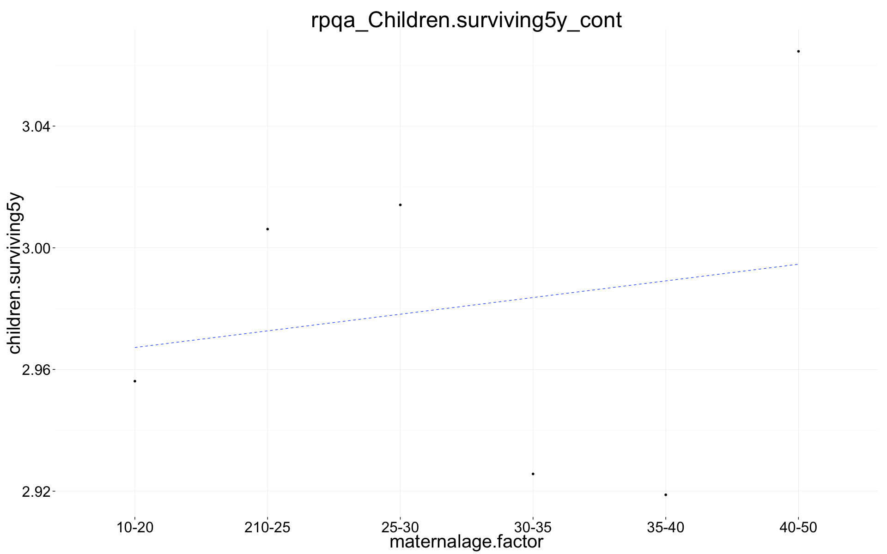
plot_factor_response(rpqa_Children.surviving5y_cont, "paternalage.factor", bootstrap_replicates = 1)
## Warning: Removed 1 rows containing missing values (geom_segment).
## Warning: Removed 1 rows containing missing values (geom_segment).
## Warning: Removed 1 rows containing missing values (geom_segment).
## Warning: Removed 1 rows containing missing values (geom_segment).
## Warning: Removed 1 rows containing missing values (geom_segment).
## Warning: Removed 1 rows containing missing values (geom_segment).
## Warning: Removed 1 rows containing missing values (geom_segment).
## Warning: Removed 1 rows containing missing values (geom_segment).
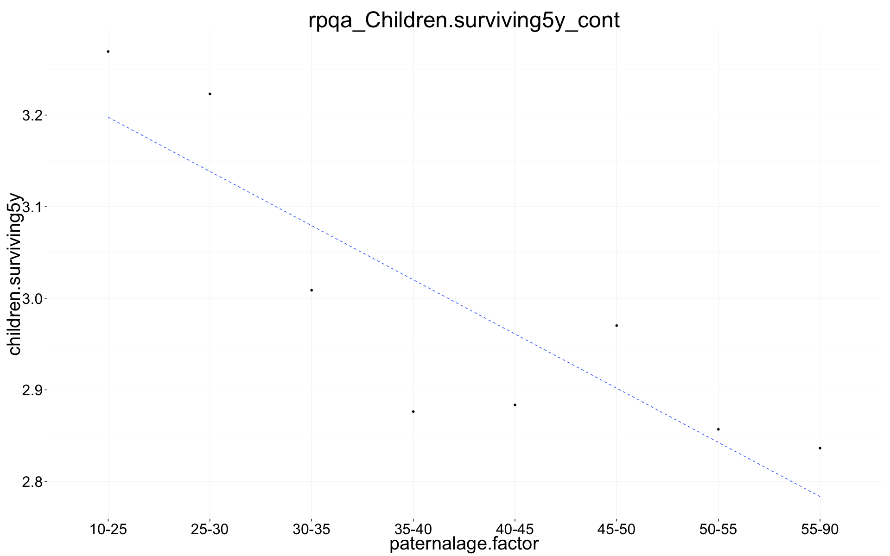
Historical Sweden
ddb.1 = ddb.1[byear< 1850, ]
ddb.1$paternalage.factor = human_readable_factor(as.character(ddb.1$paternalage.factor))
ddb.1[, nr.siblings := center(nr.siblings)]
ddb.1[, dependent_sibs_f5y := center(dependent_sibs_f5y)]
summary(ddb_Children.surviving5y <- zeroinfl(children.surviving5y ~ dependent_sibs_f5y + region + maternalage.factor + paternalloss + maternalloss + nr.siblings + birth.cohort + male + paternalage.factor, data = ddb.1))
##
## Call:
## zeroinfl(formula = children.surviving5y ~ dependent_sibs_f5y + region +
## maternalage.factor + paternalloss + maternalloss + nr.siblings +
## birth.cohort + male + paternalage.factor, data = ddb.1)
##
## Pearson residuals:
## Min 1Q Median 3Q Max
## -0.897 -0.664 -0.323 -0.129 15.562
##
## Count model coefficients (poisson with log link):
## Estimate Std. Error z value Pr(>|z|)
## (Intercept) 1.52944 0.01424 107.41 < 2e-16 ***
## dependent_sibs_f5y 0.01668 0.00346 4.82 1.4e-06 ***
## regionLinkopings -0.24904 0.01155 -21.57 < 2e-16 ***
## regionNorra inlands -0.01078 0.00851 -1.27 0.20518
## regionSundsvalls -0.29182 0.00995 -29.32 < 2e-16 ***
## maternalage.factor(10,20] 0.07440 0.02757 2.70 0.00697 **
## maternalage.factor(35,59] 0.02474 0.00860 2.88 0.00403 **
## paternalloss -0.00974 0.01425 -0.68 0.49441
## maternalloss -0.04913 0.01595 -3.08 0.00207 **
## nr.siblings 0.01035 0.00148 6.99 2.7e-12 ***
## birth.cohort(1824,1845] -0.02551 0.00738 -3.46 0.00054 ***
## birth.cohort(1845,1860] -0.04348 0.01226 -3.55 0.00039 ***
## male 0.01945 0.00670 2.90 0.00371 **
## paternalage.factor25-30 -0.03208 0.01361 -2.36 0.01839 *
## paternalage.factor30-35 -0.01242 0.01352 -0.92 0.35843
## paternalage.factor35-40 -0.02528 0.01425 -1.77 0.07607 .
## paternalage.factor40-45 -0.02183 0.01579 -1.38 0.16699
## paternalage.factor45-50 -0.04327 0.01895 -2.28 0.02241 *
## paternalage.factor50-55 -0.06949 0.02539 -2.74 0.00619 **
## paternalage.factor55-90 -0.03812 0.03194 -1.19 0.23271
##
## Zero-inflation model coefficients (binomial with logit link):
## Estimate Std. Error z value Pr(>|z|)
## (Intercept) 0.07595 0.03676 2.07 0.039 *
## dependent_sibs_f5y 0.04986 0.00871 5.73 1.0e-08 ***
## regionLinkopings 1.29798 0.02621 49.52 < 2e-16 ***
## regionNorra inlands 0.00192 0.02393 0.08 0.936
## regionSundsvalls 0.22087 0.02478 8.91 < 2e-16 ***
## maternalage.factor(10,20] 0.12964 0.07154 1.81 0.070 .
## maternalage.factor(35,59] 0.12920 0.02130 6.07 1.3e-09 ***
## paternalloss 0.87006 0.03191 27.26 < 2e-16 ***
## maternalloss 1.33778 0.03428 39.02 < 2e-16 ***
## nr.siblings 0.02634 0.00377 6.98 2.9e-12 ***
## birth.cohort(1824,1845] 0.00245 0.01857 0.13 0.895
## birth.cohort(1845,1860] 0.20115 0.03023 6.65 2.9e-11 ***
## male 0.03643 0.01684 2.16 0.031 *
## paternalage.factor25-30 -0.04326 0.03413 -1.27 0.205
## paternalage.factor30-35 -0.05612 0.03406 -1.65 0.099 .
## paternalage.factor35-40 -0.07645 0.03581 -2.14 0.033 *
## paternalage.factor40-45 -0.01753 0.03967 -0.44 0.659
## paternalage.factor45-50 0.03148 0.04713 0.67 0.504
## paternalage.factor50-55 0.01948 0.06202 0.31 0.754
## paternalage.factor55-90 0.21111 0.07520 2.81 0.005 **
## ---
## Signif. codes: 0 '***' 0.001 '**' 0.01 '*' 0.05 '.' 0.1 ' ' 1
##
## Number of iterations in BFGS optimization: 49
## Log-likelihood: -9.46e+04 on 40 Df
ddb_Children_all_zi = plot_factor_response(ddb_Children.surviving5y)
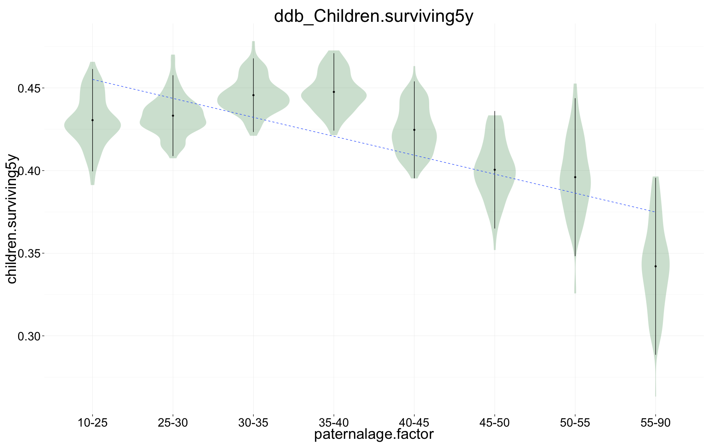
Maternal age in smaller bins
ddb.1[, maternalage.factor := cut((10*maternalage), breaks = c(10, 20,25,30, 35, 40,50))]
summary(ddb_Children.surviving5y_cont <- zeroinfl(children.surviving5y ~ region + dependent_sibs_f5y + maternalage.factor + paternalloss + maternalloss + nr.siblings + birth.cohort + male + paternalage.factor, data = ddb.1))
##
## Call:
## zeroinfl(formula = children.surviving5y ~ region + dependent_sibs_f5y +
## maternalage.factor + paternalloss + maternalloss + nr.siblings +
## birth.cohort + male + paternalage.factor, data = ddb.1)
##
## Pearson residuals:
## Min 1Q Median 3Q Max
## -0.900 -0.663 -0.323 -0.129 15.762
##
## Count model coefficients (poisson with log link):
## Estimate Std. Error z value Pr(>|z|)
## (Intercept) 1.60352 0.02968 54.02 < 2e-16 ***
## regionLinkopings -0.24855 0.01156 -21.51 < 2e-16 ***
## regionNorra inlands -0.01010 0.00851 -1.19 0.23548
## regionSundsvalls -0.29093 0.00996 -29.21 < 2e-16 ***
## dependent_sibs_f5y 0.01768 0.00358 4.94 8.0e-07 ***
## maternalage.factor(20,25] -0.06262 0.02839 -2.21 0.02742 *
## maternalage.factor(25,30] -0.09078 0.02808 -3.23 0.00122 **
## maternalage.factor(30,35] -0.06550 0.02841 -2.31 0.02112 *
## maternalage.factor(35,40] -0.05281 0.02901 -1.82 0.06867 .
## maternalage.factor(40,50] -0.03871 0.03000 -1.29 0.19700
## paternalloss -0.01053 0.01426 -0.74 0.46009
## maternalloss -0.04725 0.01595 -2.96 0.00306 **
## nr.siblings 0.01015 0.00152 6.68 2.3e-11 ***
## birth.cohort(1824,1845] -0.02545 0.00738 -3.45 0.00057 ***
## birth.cohort(1845,1860] -0.04370 0.01227 -3.56 0.00037 ***
## male 0.01937 0.00671 2.89 0.00387 **
## paternalage.factor25-30 -0.03100 0.01367 -2.27 0.02334 *
## paternalage.factor30-35 -0.01211 0.01382 -0.88 0.38096
## paternalage.factor35-40 -0.02628 0.01477 -1.78 0.07519 .
## paternalage.factor40-45 -0.02438 0.01636 -1.49 0.13627
## paternalage.factor45-50 -0.04641 0.01959 -2.37 0.01787 *
## paternalage.factor50-55 -0.07077 0.02594 -2.73 0.00637 **
## paternalage.factor55-90 -0.03727 0.03236 -1.15 0.24936
##
## Zero-inflation model coefficients (binomial with logit link):
## Estimate Std. Error z value Pr(>|z|)
## (Intercept) 0.209749 0.076723 2.73 0.0063 **
## regionLinkopings 1.301691 0.026246 49.60 < 2e-16 ***
## regionNorra inlands 0.000892 0.023944 0.04 0.9703
## regionSundsvalls 0.223927 0.024813 9.02 < 2e-16 ***
## dependent_sibs_f5y 0.053419 0.008948 5.97 2.4e-09 ***
## maternalage.factor(20,25] -0.142281 0.073700 -1.93 0.0535 .
## maternalage.factor(25,30] -0.134599 0.072750 -1.85 0.0643 .
## maternalage.factor(30,35] -0.117877 0.073484 -1.60 0.1087
## maternalage.factor(35,40] -0.026287 0.074718 -0.35 0.7250
## maternalage.factor(40,50] 0.062525 0.077215 0.81 0.4181
## paternalloss 0.872082 0.031946 27.30 < 2e-16 ***
## maternalloss 1.339223 0.034317 39.02 < 2e-16 ***
## nr.siblings 0.026139 0.003840 6.81 1.0e-11 ***
## birth.cohort(1824,1845] 0.003664 0.018585 0.20 0.8437
## birth.cohort(1845,1860] 0.201689 0.030244 6.67 2.6e-11 ***
## male 0.036349 0.016851 2.16 0.0310 *
## paternalage.factor25-30 -0.046764 0.034303 -1.36 0.1728
## paternalage.factor30-35 -0.063960 0.034895 -1.83 0.0668 .
## paternalage.factor35-40 -0.085555 0.037186 -2.30 0.0214 *
## paternalage.factor40-45 -0.033305 0.041101 -0.81 0.4177
## paternalage.factor45-50 0.003125 0.048666 0.06 0.9488
## paternalage.factor50-55 -0.015088 0.063406 -0.24 0.8119
## paternalage.factor55-90 0.185330 0.076309 2.43 0.0152 *
## ---
## Signif. codes: 0 '***' 0.001 '**' 0.01 '*' 0.05 '.' 0.1 ' ' 1
##
## Number of iterations in BFGS optimization: 54
## Log-likelihood: -9.45e+04 on 46 Df
plot_factor_response(ddb_Children.surviving5y_cont, "maternalage.factor", bootstrap_replicates = 1)
## Warning: Removed 1 rows containing missing values (geom_segment).
## Warning: Removed 1 rows containing missing values (geom_segment).
## Warning: Removed 1 rows containing missing values (geom_segment).
## Warning: Removed 1 rows containing missing values (geom_segment).
## Warning: Removed 1 rows containing missing values (geom_segment).
## Warning: Removed 1 rows containing missing values (geom_segment).
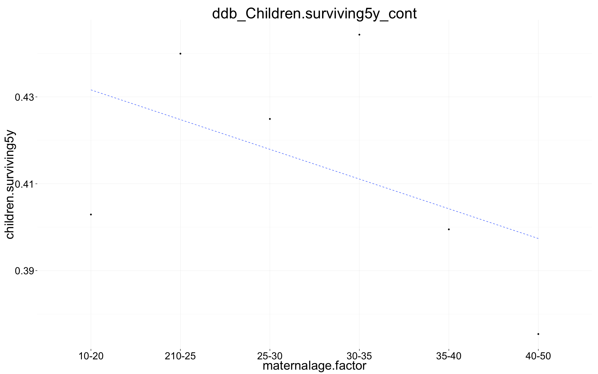
plot_factor_response(ddb_Children.surviving5y_cont, "paternalage.factor", bootstrap_replicates = 1)
## Warning: Removed 1 rows containing missing values (geom_segment).
## Warning: Removed 1 rows containing missing values (geom_segment).
## Warning: Removed 1 rows containing missing values (geom_segment).
## Warning: Removed 1 rows containing missing values (geom_segment).
## Warning: Removed 1 rows containing missing values (geom_segment).
## Warning: Removed 1 rows containing missing values (geom_segment).
## Warning: Removed 1 rows containing missing values (geom_segment).
## Warning: Removed 1 rows containing missing values (geom_segment).
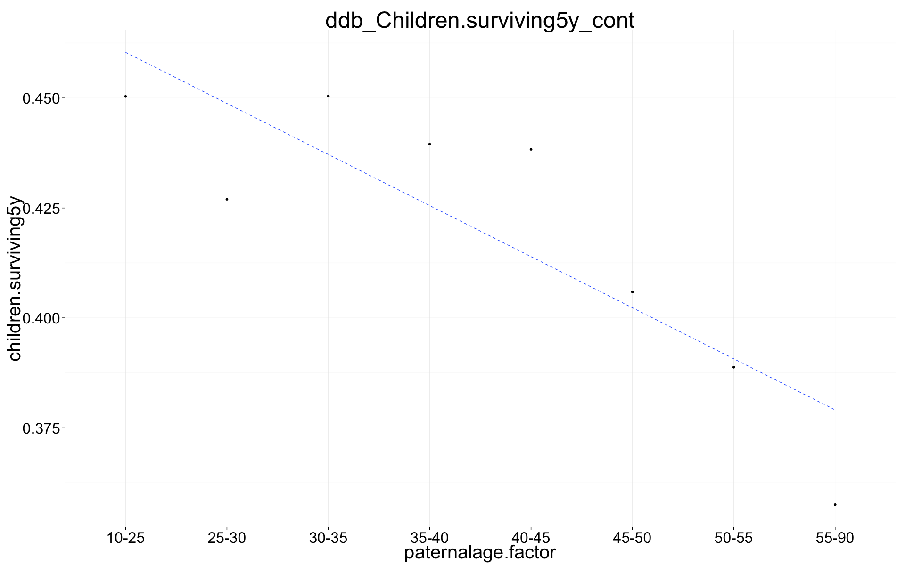
Modern Sweden
swed.1 = swed.1[byear< 1958, ]
swed.1$paternalage.factor = human_readable_factor(as.character(swed.1$paternalage.factor))
swed.1[, nr.siblings := center(nr.siblings)]
swed.1[, dependent_sibs_f5y := center(dependent_sibs_f5y)]
summary(swed_Children <- glm(children ~ dependent_sibs_f5y + maternalage.factor + paternalloss + maternalloss + nr.siblings + birth.cohort + male + paternalage.factor, data = swed.1,family = 'quasipoisson'))
##
## Call:
## glm(formula = children ~ dependent_sibs_f5y + maternalage.factor +
## paternalloss + maternalloss + nr.siblings + birth.cohort +
## male + paternalage.factor, family = "quasipoisson", data = swed.1)
##
## Deviance Residuals:
## Min 1Q Median 3Q Max
## -2.506 -0.702 0.099 0.658 6.781
##
## Coefficients:
## Estimate Std. Error t value Pr(>|t|)
## (Intercept) 0.709757 0.002181 325.41 < 2e-16 ***
## dependent_sibs_f5y -0.003100 0.000955 -3.25 0.0012 **
## maternalage.factor(14,20] 0.048449 0.002416 20.06 < 2e-16 ***
## maternalage.factor(35,61] -0.013645 0.002261 -6.04 1.6e-09 ***
## paternallossNA -0.058880 0.001632 -36.08 < 2e-16 ***
## paternallossTRUE 0.071239 0.034889 2.04 0.0412 *
## maternallossNA -0.020470 0.001391 -14.71 < 2e-16 ***
## maternallossTRUE -0.107367 0.043619 -2.46 0.0138 *
## nr.siblings 0.036303 0.000587 61.81 < 2e-16 ***
## birth.cohort(1949,1951] -0.000222 0.001876 -0.12 0.9060
## birth.cohort(1951,1954] 0.001886 0.001699 1.11 0.2671
## birth.cohort(1954,1957] 0.004950 0.001738 2.85 0.0044 **
## male -0.056191 0.001247 -45.05 < 2e-16 ***
## paternalage.factor25-30 -0.033049 0.001979 -16.70 < 2e-16 ***
## paternalage.factor30-35 -0.060731 0.002120 -28.64 < 2e-16 ***
## paternalage.factor35-40 -0.079973 0.002453 -32.60 < 2e-16 ***
## paternalage.factor40-45 -0.096961 0.003125 -31.03 < 2e-16 ***
## paternalage.factor45-50 -0.101611 0.004368 -23.26 < 2e-16 ***
## paternalage.factor50-55 -0.102173 0.007239 -14.11 < 2e-16 ***
## paternalage.factor55-90 -0.092421 0.011623 -7.95 1.8e-15 ***
## ---
## Signif. codes: 0 '***' 0.001 '**' 0.01 '*' 0.05 '.' 0.1 ' ' 1
##
## (Dispersion parameter for quasipoisson family taken to be 0.8628)
##
## Null deviance: 1349890 on 1197861 degrees of freedom
## Residual deviance: 1338202 on 1197842 degrees of freedom
## (9741 observations deleted due to missingness)
## AIC: NA
##
## Number of Fisher Scoring iterations: 5
swed_Children_all_zi = plot_factor_response(swed_Children)

Maternal age in smaller bins
swed.1[, maternalage.factor := cut((10*maternalage), breaks = c(10, 20,25,30, 35, 40,50))]
summary(swed_Children.surviving5y_cont <- zeroinfl(children.surviving5y ~ dependent_sibs_f5y + maternalage.factor + paternalloss + maternalloss + nr.siblings + birth.cohort + male + paternalage.factor, data = swed.1))
## Warning in sqrt(diag(object$vcov)): NaNs produced
##
## Call:
## zeroinfl(formula = children.surviving5y ~ dependent_sibs_f5y + maternalage.factor +
## paternalloss + maternalloss + nr.siblings + birth.cohort + male +
## paternalage.factor, data = swed.1)
##
## Pearson residuals:
## Min 1Q Median 3Q Max
## -1.6622 -0.6116 0.0982 0.6748 10.6265
##
## Count model coefficients (poisson with log link):
## Estimate Std. Error z value Pr(>|z|)
## (Intercept) 0.704799 0.003158 223.16 < 2e-16 ***
## dependent_sibs_f5y 0.009800 0.001196 8.20 2.5e-16 ***
## maternalage.factor(20,25] -0.029543 0.003055 -9.67 < 2e-16 ***
## maternalage.factor(25,30] -0.045742 0.003420 -13.37 < 2e-16 ***
## maternalage.factor(30,35] -0.054360 0.003897 -13.95 < 2e-16 ***
## maternalage.factor(35,40] -0.048484 0.004560 -10.63 < 2e-16 ***
## maternalage.factor(40,50] -0.043850 0.006183 -7.09 1.3e-12 ***
## paternallossNA -0.006930 0.002124 -3.26 0.00110 **
## paternallossTRUE 0.003046 0.037836 0.08 0.93583
## maternallossNA -0.000742 0.001801 -0.41 0.68057
## maternallossTRUE -0.073344 0.056141 -1.31 0.19141
## nr.siblings 0.025838 0.000750 34.43 < 2e-16 ***
## birth.cohort(1949,1951] 0.012623 0.002330 5.42 6.1e-08 ***
## birth.cohort(1951,1954] 0.022139 0.002137 10.36 < 2e-16 ***
## birth.cohort(1954,1957] 0.032612 0.002229 14.63 < 2e-16 ***
## male 0.009654 0.001630 5.92 3.2e-09 ***
## paternalage.factor25-30 -0.007581 0.002550 -2.97 0.00295 **
## paternalage.factor30-35 -0.010698 0.002987 -3.58 0.00034 ***
## paternalage.factor35-40 -0.012322 0.003545 -3.48 0.00051 ***
## paternalage.factor40-45 -0.010023 0.004326 -2.32 0.02050 *
## paternalage.factor45-50 -0.001966 0.005863 -0.34 0.73741
## paternalage.factor50-55 0.003422 0.009375 0.36 0.71512
## paternalage.factor55-90 0.011040 0.014901 0.74 0.45877
##
## Zero-inflation model coefficients (binomial with logit link):
## Estimate Std. Error z value Pr(>|z|)
## (Intercept) -4.73448 0.03774 -125.43 < 2e-16 ***
## dependent_sibs_f5y 0.21189 0.01088 19.48 < 2e-16 ***
## maternalage.factor(20,25] 0.17766 0.03371 5.27 1.4e-07 ***
## maternalage.factor(25,30] 0.29265 0.03660 8.00 1.3e-15 ***
## maternalage.factor(30,35] 0.45132 0.03980 11.34 < 2e-16 ***
## maternalage.factor(35,40] 0.58053 0.04391 13.22 < 2e-16 ***
## maternalage.factor(40,50] 0.73363 0.05179 14.17 < 2e-16 ***
## paternallossNA 0.71649 0.01690 42.40 < 2e-16 ***
## paternallossTRUE -8.44922 NA NA NA
## maternallossNA 0.36916 0.01663 22.19 < 2e-16 ***
## maternallossTRUE 0.59241 0.40610 1.46 0.14
## nr.siblings -0.17148 0.00788 -21.77 < 2e-16 ***
## birth.cohort(1949,1951] 0.24346 0.02361 10.31 < 2e-16 ***
## birth.cohort(1951,1954] 0.35861 0.02123 16.89 < 2e-16 ***
## birth.cohort(1954,1957] 0.46606 0.02143 21.75 < 2e-16 ***
## male 1.12232 0.01936 57.98 < 2e-16 ***
## paternalage.factor25-30 0.29412 0.02645 11.12 < 2e-16 ***
## paternalage.factor30-35 0.49104 0.03002 16.36 < 2e-16 ***
## paternalage.factor35-40 0.69041 0.03427 20.15 < 2e-16 ***
## paternalage.factor40-45 0.93744 0.03803 24.65 < 2e-16 ***
## paternalage.factor45-50 1.07055 0.04518 23.69 < 2e-16 ***
## paternalage.factor50-55 1.11154 0.06282 17.69 < 2e-16 ***
## paternalage.factor55-90 1.08061 0.09205 11.74 < 2e-16 ***
## ---
## Signif. codes: 0 '***' 0.001 '**' 0.01 '*' 0.05 '.' 0.1 ' ' 1
##
## Number of iterations in BFGS optimization: 64
## Log-likelihood: -1.93e+06 on 46 Df
plot_factor_response(swed_Children.surviving5y_cont, "maternalage.factor", bootstrap_replicates = 1)
## Warning: Removed 1 rows containing missing values (geom_segment).
## Warning: Removed 1 rows containing missing values (geom_segment).
## Warning: Removed 1 rows containing missing values (geom_segment).
## Warning: Removed 1 rows containing missing values (geom_segment).
## Warning: Removed 1 rows containing missing values (geom_segment).
## Warning: Removed 1 rows containing missing values (geom_segment).
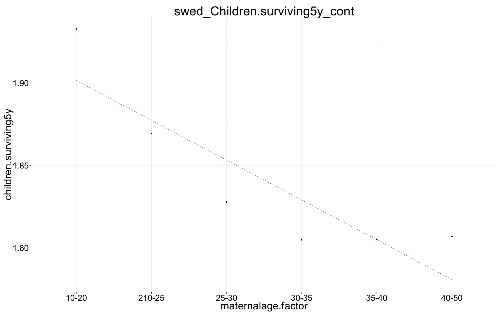
plot_factor_response(swed_Children.surviving5y_cont, "paternalage.factor", bootstrap_replicates = 1)
## Warning: Removed 1 rows containing missing values (geom_segment).
## Warning: Removed 1 rows containing missing values (geom_segment).
## Warning: Removed 1 rows containing missing values (geom_segment).
## Warning: Removed 1 rows containing missing values (geom_segment).
## Warning: Removed 1 rows containing missing values (geom_segment).
## Warning: Removed 1 rows containing missing values (geom_segment).
## Warning: Removed 1 rows containing missing values (geom_segment).
## Warning: Removed 1 rows containing missing values (geom_segment).
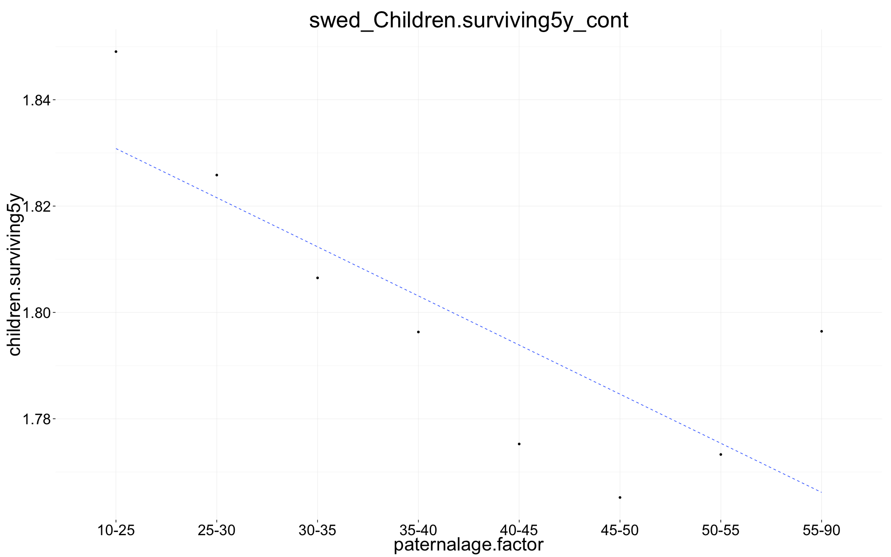
Comparison
together = merge_coefs(
"Historical Sweden" = ddb_Children_all_zi,
"Québec" = rpqa_Children_all_zi,
"Krummhörn" = krmh_Children_all_zi,
"Modern Sweden" = swed_Children_all_zi
)
together$Population = factor(together$Population, c("Québec","Modern Sweden","Historical Sweden","Krummhörn"))
tog_zizo = ggplot(together, aes(x = paternalage.factor, y = value, fill = Population)) +
geom_violin(colour = "transparent", alpha = 0.3, position = position_identity(), scale = "width") +
geom_point(aes(colour = Population),stat = "summary", fun.data = "mean_sdl", position = position_identity())+
geom_smooth(aes(colour = Population, weight = 1/sd(value, na.rm = T),group = Population),method = "lm", se = F, lty = "dashed", position = position_identity()) +
ggtitle("Children of older fathers have lower evolutionary fitness") +
scale_y_continuous("Number of child's children who survive 5 years") +
xlab("Paternal age") +
analysis_theme + pop_colour + pop_fill +
theme(legend.position = c(1,1),
legend.justification = c(1,1))
tog_zizo
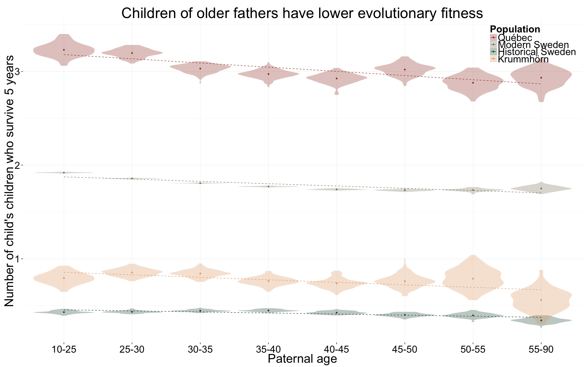